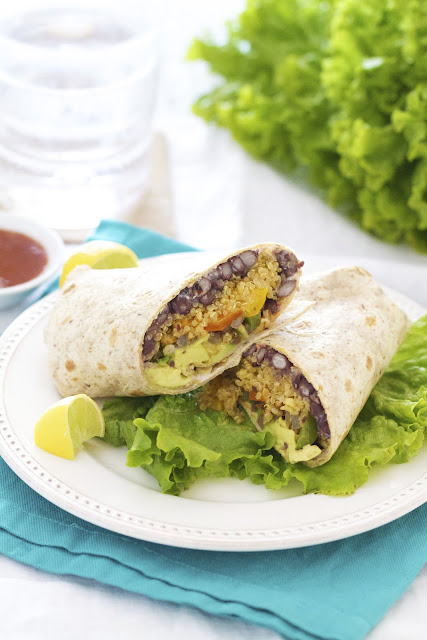

Southwest Quinoa Wraps

Description
Tasty, simple, easy to make wraps that pack a protein a punch!
Ingredients
- 1 1/2 cooked quinoa in vegetable broth
- 15 oz can of black beans rinsed and drained
- 1 cup of corn
- 2/3 cups of salsa
- 1/4 cup of chopped cilantro
- 1 packet of taco seasoning
- Tortillas of your choice
Instructions
- Combine all ingredients in a bowl (can leave out half the taco seasoning to try first).
- Mix the ingredients together.
- Taste to see if rest of taco seasoning is needed.
- Spread on tortillas, wrap, and serve!